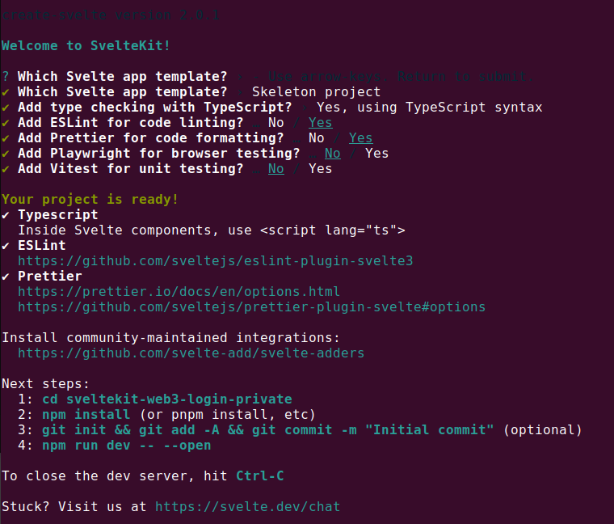

This tutorial was updated on 2023-01-02 09:45:33 -0300.
1. Introduction
In this tutorial, you will see how this web application is built:
|
The link above shows you an application that offers two possibilities:
I wrote an additional tutorial where I followed some steps shown by the Moralis team (using React instead of SvelteKit) to achieve the web3 login feature done in this tutorial. Here is the running application produced by following the steps in this tutorial.
2. Setting up the tools you will need to follow this tutorial
To follow this tutorial you will need a modern Linux environment with some tools installed.
Expand this to read more about my Linux environment.
I’ll use a Linux Ubuntu 22.04 to follow the steps in here. You will need the following tools installed:
-
pnpm.
-
Visual Studio Code. Future updates of this tutorial will aggregate the use of devcontainers, a very useful tool.
These are the versions of the tools above, running on my environment:
$ node -v v16.18.1 $ npm -v 8.19.2
Open a Bash shell on your environment and copy and paste the next commands to it.
| To keep a better organization of your shell terminals, I recommend you to use the tmux. |
Clone this tutorial to your local machine and change your current directory to it:
repo=https://github.com/paulojeronimo/sveltekit-web3-login-tutorial;
git clone $repo && cd $(basename $repo)If you intend only to run The final code you can skip directly to that session. Otherwise …
Install some Bash functions that you will execute on this tutorial:
. ./functions.shExpand this to see the content of the functions.sh script.
#!/usr/bin/env bash
TUT_MARK='# SVELTEKIT_WEB3_LOGIN'
TUT_DIR=$(cd "$(dirname "$BASH_SOURCE[0]")"; pwd)
PROFILE=~/.bashrc
tut() {
case "$1" in
add)
shift
(cd "$TUT_DIR"/files; rsync -R $1 $OLDPWD)
;;
apply)
shift
git apply "$TUT_DIR"/files/$1
;;
uninstall)
sed -i "/^$TUT_MARK/,+1d" $PROFILE
;;
*)
cd "$TUT_DIR"
esac
}
if ! grep -q -e "^$TUT_MARK" $PROFILE
then
echo "$TUT_MARK" >> $PROFILE
echo ". $TUT_DIR/functions.sh" >> $PROFILE
fi3. Creating the SvelteKit project
pnpm create svelte@latest sveltekit-web3-login-privateExpand this to see my options when I ran the command above.

cd sveltekit-web3-login-private && rm -f README.mdpnpm i && \
git init && git add -A && \
git commit -m 'Initial commit'Open another shell (I will name it as pnpm) and, inside it, type:
pnpm run dev -- --openOpen the default site: http://localhost:5173
4. Creating the 'About' page
4.1. Testing a simple change
diff --git a/src/routes/+page.svelte b/src/routes/+page.svelte
index 5982b0a..2aebcde 100644
--- a/src/routes/+page.svelte
+++ b/src/routes/+page.svelte
@@ -1,2 +1,2 @@
<h1>Welcome to SvelteKit</h1>
-<p>Visit <a href="https://kit.svelte.dev">kit.svelte.dev</a> to read the documentation</p>
+<p>Visit <a href="https://paulojeronimo.com">paulojeronimo.com</a></p>tut apply 01.diffgit add . && \
git commit -m 'Made a simple change'4.2. Adding an 'About' page
diff --git a/src/routes/+page.svelte b/src/routes/+page.svelte
index 2aebcde..3c0827f 100644
--- a/src/routes/+page.svelte
+++ b/src/routes/+page.svelte
@@ -1,2 +1,2 @@
-<h1>Welcome to SvelteKit</h1>
-<p>Visit <a href="https://paulojeronimo.com">paulojeronimo.com</a></p>
+<h1>SvelteKit Web3 Login</h1>
+<a href="/about">About</a>
diff --git a/src/routes/about/+page.svelte b/src/routes/about/+page.svelte
new file mode 100644
index 0000000..8572216
--- /dev/null
+++ b/src/routes/about/+page.svelte
@@ -0,0 +1,3 @@
+<h1>About</h1>
+<p>A page to test Web3 login on SvelteKit.</p>
+<a href="/">Home</a>tut apply 02.diffgit add . && \
git commit -m 'Added an About page'5. Building static pages (Static Site Generation - SSG)
Stop vite on pnpm shell (by typing pCtrl+C) and add an new
dependencie to the project:
pnpm i -D @sveltejs/adapter-static@latest svelte-preprocess && \
git add .|
Optionally we can also uninstall shell: pnpm
pnpm rm -D @sveltejs/adapter-auto |
Update svelte.config.js:
diff --git a/svelte.config.js b/svelte.config.js
index 87f198f..5cb2550 100644
--- a/svelte.config.js
+++ b/svelte.config.js
@@ -1,14 +1,18 @@
-import adapter from '@sveltejs/adapter-auto';
-import { vitePreprocess } from '@sveltejs/kit/vite';
+import preprocess from 'svelte-preprocess';
+import adapter from '@sveltejs/adapter-static';
/** @type {import('@sveltejs/kit').Config} */
const config = {
// Consult https://kit.svelte.dev/docs/integrations#preprocessors
// for more information about preprocessors
- preprocess: vitePreprocess(),
+ preprocess: preprocess(),
kit: {
- adapter: adapter()
+ adapter: adapter({
+ pages: 'build',
+ assets: 'build',
+ fallback: null
+ })
}
};tut apply 03.diff && \
tut add src/routes/+layout.jspnpm run build && tree buildTest the build locally:
serve -l 5173 buildCommit all the changes:
git add . && \
git commit -m 'Updated to SSG'6. Deploy to GitHub Pages
Press Ctrl+C to stop the serve running on pnpm terminal.
Add gh-pages to package.json:
pnpm i -D gh-pages && \
git add package.json pnpm-lock.yamlWe’ll need to update svelte.config.js according to this diff:
diff --git a/svelte.config.js b/svelte.config.js
index 5cb2550..b6eecf5 100644
--- a/svelte.config.js
+++ b/svelte.config.js
@@ -12,7 +12,10 @@ const config = {
pages: 'build',
assets: 'build',
fallback: null
- })
+ }),
+ paths: {
+ base: process.env.NODE_ENV === 'production' ? '/sveltekit-web3-login' : ''
+ }
}
};tut apply 04.diffAlso, we’ll need to update the pages.
First, src/routes/+page.svelte:
diff --git a/src/routes/+page.svelte b/src/routes/+page.svelte
index 3c0827f..c71bcd1 100644
--- a/src/routes/+page.svelte
+++ b/src/routes/+page.svelte
@@ -1,2 +1,6 @@
+<script>
+ import { base } from '$app/paths';
+</script>
+
<h1>SvelteKit Web3 Login</h1>
-<a href="/about">About</a>
+<a href="{base}/about">About</a>tut apply 05.diffThen, src/routes/about/+pages.svelte:
diff --git a/src/routes/about/+page.svelte b/src/routes/about/+page.svelte
index 8572216..ed1df81 100644
--- a/src/routes/about/+page.svelte
+++ b/src/routes/about/+page.svelte
@@ -1,3 +1,7 @@
+<script>
+ import { base } from '$app/paths';
+</script>
+
<h1>About</h1>
<p>A page to test Web3 login on SvelteKit.</p>
-<a href="/">Home</a>
+<a href="{base}/">Home</a>tut apply 06.diffFinally, we’ll create a deploy script:
diff --git a/package.json b/package.json
index 03f33b8..6d1339d 100644
--- a/package.json
+++ b/package.json
@@ -5,6 +5,8 @@
"scripts": {
"dev": "vite dev",
"build": "vite build",
+ "predeploy": "NODE_ENV=production npm run build",
+ "deploy": "touch build/.nojekyll && gh-pages -d build -t true",
"preview": "vite preview",
"check": "svelte-kit sync && svelte-check --tsconfig ./tsconfig.json",
"check:watch": "svelte-kit sync && svelte-check --tsconfig ./tsconfig.json --watch",tut apply 07.diffNow, let’s commit all theses changes.
git add . && \
git commit -m 'Added gh-pages support'To deploy on GitHub Pages, let’s first configure the origin for this
repo.
|
repo=paulojeronimo/sveltekit-web3-login;
git remote add origin git@github.com:$repo.git &&
git repo set-defaultNext, type the command below.
|
gh repo create $repo --public && \
pnpm run deploy| Obviously, you will be using your own account. So the URL in your case will be different (https://your-name.github.io/sveltekit-web3-login). |
7. Putting the redundant code in a layout file
The piece of redudant code in the pages above will be moved to a new file:
<script>
import { base } from '$app/paths';
</script>
<nav>
<a href="{base}/">Home</a>
<a href="{base}/about">About</a>
</nav>
<slot/>After that we’ll need to remove that code that was redundant in the pages:
diff --git a/src/routes/+page.svelte b/src/routes/+page.svelte
index c71bcd1..fcfec57 100644
--- a/src/routes/+page.svelte
+++ b/src/routes/+page.svelte
@@ -1,6 +1 @@
-<script>
- import { base } from '$app/paths';
-</script>
-
<h1>SvelteKit Web3 Login</h1>
-<a href="{base}/about">About</a>
diff --git a/src/routes/about/+page.svelte b/src/routes/about/+page.svelte
index ed1df81..ae068f6 100644
--- a/src/routes/about/+page.svelte
+++ b/src/routes/about/+page.svelte
@@ -1,7 +1 @@
-<script>
- import { base } from '$app/paths';
-</script>
-
<h1>About</h1>
-<p>A page to test Web3 login on SvelteKit.</p>
-<a href="{base}/">Home</a>So, let’s apply these changes:
tut add src/routes/+layout.svelte && \
tut apply 08.diffStart vite again and refresh http://localhost:5173 to note the changes:
pnpm run devFinally, commit the updates:
git add . && \
git commit -m 'Created src/routes/+layout.svelte'8. Building a Navbar (using sveltestrap)
Type an Ctrl+C on the pnpm shell to add Sveltestrap.
pnpm i sveltestrap && \
git add .10. The final code
After completing all the steps followed in this tutorial (including the steps not yet documented), the final code and the instructions to put it running on GitHub Pages, are available in the directory "final-code" of this tutorial.
10.1. Running locally
First, you need to clone the repository of this tutorial. After that, copy and paste the following commands to your command line:
cd final-code && \
pnpm install && pnpm run dev